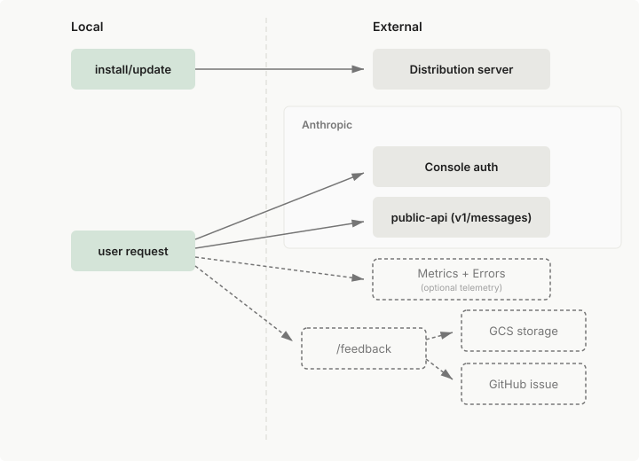

数据使用
了解 Anthropic 对 Claude 数据使用的政策
数据政策
数据训练政策
消费者用户（Free、Pro、Max 和 Ultra 计划）：
我们让您自行选择是否允许将您的数据用于改进未来的 Claude 模型。当此设置开启时，我们将使用来自 Free、Pro、Max 和 Ultra 账户的数据训练新模型（包括您通过这些账户使用 Claude Code 时）。
商业用户：（Team 和 Enterprise 计划、API、第三方平台以及 Claude Gov）维持现有政策：Anthropic 不会使用在商业条款下发送给 Claude Code 的代码或提示词来训练生成式模型，除非客户已选择向我们提供其数据以用于模型改进（例如 Developer Partner Program）。
Development Partner Program
如果您明确选择加入向我们提供训练材料的方式，例如通过 Development Partner Program，我们可能会使用所提供的这些材料来训练我们的模型。组织管理员可以为其组织明确选择加入 Development Partner Program。请注意，此计划仅适用于 Anthropic 第一方 API，不适用于 Amazon Bedrock 或 Google Cloud's Agent Platform 用户。
使用 /feedback 命令提交反馈
如果您选择使用 /feedback 命令向我们发送有关 Claude Code 的反馈，我们可能会使用您的反馈来改进我们的产品和服务。通过 /feedback 共享的会话记录，以及通过经由同一路径报告的 /bug 和 /share 共享的会话记录，将保留 5 年。
借助 Claude 起草的反馈，Claude 还可以起草反馈报告并将其排队保存在您的机器上，供您审阅。在您选择发送草稿之前，Claude Code 不会发送任何内容；已发送的草稿与其他 /feedback 报告采用相同的提交路径和保留期限。
会话质量调查
当您在 Claude Code 中看到"How is Claude doing this session?"提示时，回应此调查（包括选择"Dismiss"）仅会记录您的评分。我们不会在评分提示本身中收集或存储任何对话记录、输入、输出或其他会话数据。与点赞/点踩反馈或 /feedback 报告不同，此会话质量调查只是一个简单的产品满意度指标。
在评分提示之后，您可能会看到一个单独的后续问题："Can Anthropic look at your session transcript to help us improve Claude Code?"。这是一个与评分不同的可选第二步：
- Yes：将您的对话会话记录、所有子代理会话记录以及磁盘上的原始会话日志文件上传到 Anthropic。已知的 API 密钥和 token 模式会在上传前被脱敏处理。源代码、文件内容和其他对话内容将按原样上传。共享的会话记录最多保留 6 个月。在 Amazon Bedrock、Google Cloud's Agent Platform、Microsoft Foundry 以及已登录的 Claude apps gateway 会话中，选择 Yes 会将相同的负载写入
~/.claude/feedback-bundles/下的本地归档文件，而不是上传；在您转发该文件之前，任何内容都不会离开您的机器。 - No：拒绝且不发送任何内容
- Don't ask again：拒绝并在今后的会话中不再显示此后续问题
除非您明确选择 Yes，否则不会上传任何内容。启用了零数据保留的组织、通过组织策略禁用了产品反馈的组织，或设置了 CLAUDE_CODE_DISABLE_NONESSENTIAL_TRAFFIC 的环境，永远不会看到此后续问题。您对此调查的回应（包括在评分提示后提交的会话记录）不会影响您的数据训练偏好，也不能用于训练我们的 AI 模型。
要禁用这些调查，请设置 CLAUDE_CODE_DISABLE_FEEDBACK_SURVEY=1。当设置了 DISABLE_TELEMETRY、DO_NOT_TRACK 或 CLAUDE_CODE_DISABLE_NONESSENTIAL_TRAFFIC 时，调查也会被禁用。阻止非必要流量但通过自己的 OpenTelemetry 收集器采集调查回应的组织，可以通过设置 CLAUDE_CODE_ENABLE_FEEDBACK_SURVEY_FOR_OTEL=1 重新启用调查。此时调查仅将评分记录到所配置的收集器。会话记录共享后续问题以及所有其他发往 Anthropic 的反馈流量仍保持禁用。如果想控制频率而不是禁用，请在设置文件中将 feedbackSurveyRate 设为介于 0 和 1 之间的概率值。
数据保留
Anthropic 根据您的账户类型和偏好保留 Claude Code 数据。
消费者用户（Free、Pro、Max 和 Ultra 计划）：
- 允许将数据用于模型改进的用户：保留期为 5 年，以支持模型开发和安全性改进
- 不允许将数据用于模型改进的用户：保留期为 30 天
- 隐私设置可随时在 claude.ai/settings/data-privacy-controls 更改。
商业用户（Team、Enterprise 和 API）：
- 标准：保留期为 30 天
- 零数据保留：适用于 Claude for Enterprise 上 Claude Code 的合格账户。ZDR 不包含在标准 Enterprise 计划中；由您的客户团队在确认资格后按组织逐一启用
- 本地缓存：Claude Code 客户端默认会将会话记录以明文形式在本地
~/.claude/projects/下存储 30 天，以支持会话恢复。可通过cleanupPeriodDays调整该期限。有关存储内容以及如何清除，请参阅应用数据。
在 Claude Desktop 或 Cowork 中启动或最近一次继续的会话，其会话记录默认不受该期限限制。
您可以随时删除单个云端会话。删除会话会永久移除该会话的事件数据。有关如何删除会话的说明，请参阅删除会话。
在我们的隐私中心了解有关数据保留做法的更多信息。
有关完整详情，请查阅我们的商业服务条款（适用于 Team、Enterprise 和 API 用户）或消费者条款（适用于 Free、Pro、Max 和 Ultra 用户）以及隐私政策。
数据访问
对于所有第一方用户，您可以了解更多关于为本地 Claude Code 和远程 Claude Code 记录的数据。Remote Control 会话遵循本地数据流，因为所有执行都发生在您的机器上；连接时，会话记录也存储在 Anthropic 服务器上以在设备间同步对话，如连接和安全中所述。请注意，对于远程 Claude Code，Claude 访问您启动 Claude Code 会话的存储库。Claude 不访问您已连接但未在其中启动会话的存储库。
本地 Claude Code：数据流和依赖关系
下面的图表显示了 Claude Code 在安装和正常操作期间如何连接到外部服务。实线表示必需的连接，而虚线表示可选或用户启动的数据流。

Claude Code 在本地运行。为了与 LLM 交互，Claude Code 通过网络发送数据。此数据包括所有用户提示和模型输出，通过 TLS 1.2+ 在传输中加密。Claude Code 与大多数流行的 VPN 和 LLM 代理兼容。
静止时的加密取决于您的模型提供商：
| 提供商 | 静止时加密 |
|---|---|
| Anthropic API | 基础设施级磁盘加密 (AES-256)。启用 Zero Data Retention 以实现无服务器端持久化。 |
| Amazon Bedrock | AES-256，使用 AWS 管理的密钥。可通过 AWS KMS 获得客户管理的密钥。 |
| Google Cloud 的 Agent Platform | Google 管理的加密密钥。CMEK 可用。 |
| Microsoft Foundry | 取决于部署的托管选项。对于在 Azure 上托管的部署，提示和完成内容保留在 Azure 内；只有使用情况元数据和由 Anthropic 安全系统标记的内容才会流向 Anthropic。对于在 Anthropic 上托管的部署，请求路由到 Anthropic 基础设施，使用 AES-256 磁盘加密。 |
Claude Code 基于 Anthropic 的 API 构建。有关 API 安全控制的详情，包括 API 日志记录程序，请参阅 Anthropic 信任中心中的合规工件。
云执行：数据流和依赖关系
使用网络上的 Claude Code时，会话默认在 Anthropic 管理的虚拟机中运行，而不是在本地运行。您的组织路由到自托管环境的会话在您控制的基础设施上运行；有关哪些内容保留在您的机器上以及哪些内容仍然流向 Anthropic，请参阅哪些内容保留在您的基础设施上。在 Anthropic 托管的云会话中：
- **代码和数据存储：**您的存储库被克隆到隔离的 VM。Anthropic 存储会话记录，以便您稍后可以返回该会话。代码和会话数据受您的账户类型的数据保留和使用政策约束
- **凭证：**GitHub 凭证在 Anthropic 的服务器上加密存储，永远不会进入 VM。来自 VM 的 GitHub 流量通过 Anthropic 代理，该代理在服务器端附加凭证
- **网络流量：**所有出站流量都通过安全代理进行审计日志记录和滥用防止
- **会话数据：**提示、代码更改和输出遵循与本地 Claude Code 使用相同的数据政策
有关云执行的安全详情，请参阅安全。
遥测服务
Claude Code 发送两种操作遥测：使用指标和错误报告。您可以使用下面的环境变量分别关闭每一种，或通过设置 CLAUDE_CODE_DISABLE_NONESSENTIAL_TRAFFIC 一次性禁用所有非必要流量。设置 DISABLE_TELEMETRY 或 CLAUDE_CODE_DISABLE_NONESSENTIAL_TRAFFIC 也会禁用 Remote Control 所依赖的功能标志评估；DISABLE_ERROR_REPORTING 则不会。
指标：延迟、可靠性和使用模式，通过 TLS 发送到 Anthropic 和第三方日志记录基础设施。指标永远不包括您的代码、提示或文件路径。设置 DISABLE_TELEMETRY=1 以选择退出。
错误报告：来自 Claude Code 自身内部的错误消息和堆栈跟踪，通过 TLS 发送到第三方错误跟踪服务。Claude Code 在任何内容离开您的机器之前会编辑已知的密钥、文件路径、电子邮件地址和其他个人信息的模式。设置 DISABLE_ERROR_REPORTING=1 以选择退出。
错误报告仅在以下所有条件都适用时才启用：
- 您使用 Claude Pro、Max 或 Ultra 订阅登录
- 您运行的是 Claude Code v2.1.198 或更高版本
- 您直接连接到 Claude API
- 您的组织没有零数据保留或 HIPAA 协议
当您运行 /feedback 命令时，您的对话历史记录（包括代码）的副本被发送到 Anthropic。/bug 和 /share 命令通过相同的路径提交。在从反馈对话框提交报告之前，您可以选择包含多少历史记录：仅当前会话（这是默认设置），或者也包括来自同一项目在过去 24 小时或 7 天内的其他会话。Claude Code 通过相同的路径提交 Claude 起草的反馈，包括当您在草稿的审查屏幕上选择包含它时的记录。数据通过 TLS 在传输中加密并存储在 Google Cloud Storage 中，Google Cloud Storage 默认对静止数据进行加密。可选地，在公共存储库中创建 GitHub 问题。要选择退出，请将 DISABLE_FEEDBACK_COMMAND 环境变量设置为 1。
当您使用第三方提供商（如 Amazon Bedrock 或 Google Cloud 的 Agent Platform），或未配置 Anthropic 凭据时，/feedback 会将报告写入 ~/.claude/feedback-bundles/ 下的本地存档，而不是将其发送到 Anthropic。已知的 API 密钥和令牌模式在写入存档之前被编辑。在您将该文件发送给您的 Anthropic 账户代表或将其附加到支持请求之前，没有任何内容离开您的机器。
按 API 提供商的默认行为
默认情况下，当使用 Amazon Bedrock、Google Cloud 的 Agent Platform、Microsoft Foundry 或 Claude Platform on AWS 时，错误报告、遥测和错误报告被禁用。会话质量调查和 WebFetch 域安全检查是例外，无论提供商如何都会运行。在已登录的 Claude apps gateway 会话上，使用分析、错误报告和向 Anthropic 的调查评分由网关凭证本身禁用，没有重新启用的设置。您可以通过设置 CLAUDE_CODE_DISABLE_NONESSENTIAL_TRAFFIC 一次选择退出所有非必需的流量，包括调查。此变量不影响 WebFetch 检查或官方插件市场自动安装；每个都有自己的选择退出选项：settings 中的 skipWebFetchPreflight 用于 WebFetch，CLAUDE_CODE_DISABLE_OFFICIAL_MARKETPLACE_AUTOINSTALL 用于市场。以下是完整的默认行为：
| 服务 | Claude API | Google Cloud 的 Agent Platform API | Amazon Bedrock API | Microsoft Foundry API | Claude Platform on AWS |
|---|---|---|---|---|---|
| Metrics | 默认开启。 DISABLE_TELEMETRY=1 禁用。 |
默认关闭。 CLAUDE_CODE_USE_VERTEX 必须为 1。 |
默认关闭。 CLAUDE_CODE_USE_BEDROCK 必须为 1。 |
默认关闭。 CLAUDE_CODE_USE_FOUNDRY 必须为 1。 |
默认关闭。 CLAUDE_CODE_USE_ANTHROPIC_AWS 必须为 1。 |
| Error reports | v2.1.198+ 上 Pro、Max 和 Ultra 登录默认开启，否则关闭。 DISABLE_ERROR_REPORTING=1 禁用。 |
默认关闭。 CLAUDE_CODE_USE_VERTEX 必须为 1。 |
默认关闭。 CLAUDE_CODE_USE_BEDROCK 必须为 1。 |
默认关闭。 CLAUDE_CODE_USE_FOUNDRY 必须为 1。 |
默认关闭。 CLAUDE_CODE_USE_ANTHROPIC_AWS 必须为 1。 |
Claude API（/feedback 报告） |
默认开启。 DISABLE_FEEDBACK_COMMAND=1 禁用。 |
默认关闭。 CLAUDE_CODE_USE_VERTEX 必须为 1。 |
默认关闭。 CLAUDE_CODE_USE_BEDROCK 必须为 1。 |
默认关闭。 CLAUDE_CODE_USE_FOUNDRY 必须为 1。 |
默认关闭。 CLAUDE_CODE_USE_ANTHROPIC_AWS 必须为 1。 |
| 会话质量调查 | 默认开启。 CLAUDE_CODE_DISABLE_FEEDBACK_SURVEY=1 禁用。 |
默认开启。 CLAUDE_CODE_DISABLE_FEEDBACK_SURVEY=1 禁用。 |
默认开启。 CLAUDE_CODE_DISABLE_FEEDBACK_SURVEY=1 禁用。 |
默认开启。 CLAUDE_CODE_DISABLE_FEEDBACK_SURVEY=1 禁用。 |
默认开启。 CLAUDE_CODE_DISABLE_FEEDBACK_SURVEY=1 禁用。 |
| WebFetch 域安全检查 | 默认开启。 settings 中 skipWebFetchPreflight: true 禁用。 |
默认开启。 settings 中 skipWebFetchPreflight: true 禁用。 |
默认开启。 settings 中 skipWebFetchPreflight: true 禁用。 |
默认开启。 settings 中 skipWebFetchPreflight: true 禁用。 |
默认开启。 settings 中 skipWebFetchPreflight: true 禁用。 |
所有环境变量都可以检查到 settings.json（请参阅 settings 参考）。
当主机平台设置 CLAUDE_CODE_PROVIDER_MANAGED_BY_HOST 时，Google Cloud 的 Agent Platform、Amazon Bedrock、Microsoft Foundry 和 Claude Platform on AWS 的指标默认开启，并遵循标准的 DISABLE_TELEMETRY 选择退出。错误报告和 /feedback 报告在这些提供商上仍然默认关闭。
WebFetch 域安全检查
在获取 URL 之前，WebFetch 工具将请求的主机名发送到 api.anthropic.com 以根据 Anthropic 维护的安全阻止列表进行检查。仅发送主机名，不发送完整 URL、路径或页面内容。Claude Code 将通过检查的主机名缓存五分钟，并在下一个请求时重新检查被阻止或失败的主机名。
无论您使用哪个模型提供商，此检查都会运行，不受 CLAUDE_CODE_DISABLE_NONESSENTIAL_TRAFFIC 影响。如果您的网络阻止 api.anthropic.com，WebFetch 请求将失败，直到您允许列表该域或在 settings 中设置 skipWebFetchPreflight: true。禁用检查意味着 WebFetch 尝试检索任何 URL 而不咨询阻止列表，因此如果您需要限制 Claude 可以访问的域，请将其与 WebFetch 权限规则 结合使用。